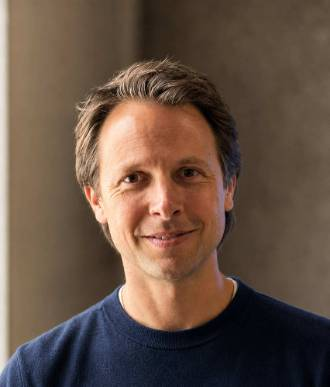

Campaigns, research, and the Screen Time Action Network, working to free childhood from Big Tech's harms.
An evening with neuroscientist Dr. Jared Cooney Horvath
Raising kids in a fast-changing, tech-driven world can feel overwhelming. Neuroscientist Dr. Jared Cooney Horvath will give you clear, research-backed insight into how your child’s brain grows and learns. You’ll leave with practical strategies to support them at home and at school, from kindergarten through high school. A 90-minute presentation followed by a 30-minute live Q&A. Bring your questions.
What you’ll take home
For parents, caregivers, and educators of kids in kindergarten through high school. All are welcome at either (or both) events!

One talk, two nights. Open to families from every town; pick the night that works for you.
7:00 to 9:00 PM · Auditorium at Ellen Garrison Building at Concord Middle School, 923 Old Marlboro Road
Register for ConcordChildcare for ages 5 to 12 may be offered if there's enough interest. Let us know by Nov 10
7:00 to 9:00 PM · Hardy Elementary School, 293 Weston Road, Wellesley
Register for WellesleyEach evening is a 90-minute presentation followed by a 30-minute live Q&A. Presented by Turning Life On and the Lexington Education Foundation. Hosted by Wellesley Mothers Forum, the Intentional Tech Coalition, and Lex Kids Be Kids, with community partners Beyond Screens Wellesley and Open Door Education.
Learn more about the event →The tools we've written ourselves, and the books and websites that come up again and again when families ask where to start. We keep this list short on purpose: everything here is something we've actually read, used, and would hand to a neighbor.
We favor work grounded in research, and we say so when something is one perspective among several rather than settled science.
Ideas a busy household can actually use, without assuming any particular family circumstance, schedule, or budget.
Nothing on this list shames families for the choices they've already made. We're all figuring this out as we go.
Written by the coalition for Concord families. Most of these were handed out at our October 15 event, Navigating Tech at Home and School. Free to read, print, and share.
Use these on your own child’s behalf. Pick the asks that fit your family, adapt the sample messages, and send them to your child’s teacher or principal. You don’t need to be part of the coalition to use them.
How to use Aspen's internet consent form to ask for the protections you want for your child, and send one of three email templates. Adapted from Turning Life On's Your Consent Counts.
Read it → Two-page handout · Grades K-5Five asks you can make for your child, each with the research behind it and a short sample message to send their teacher or principal.
Read it → Two-page handout · Grades 6-8Seven asks you can make for your child, from allowed-sites-only internet to phones locked away, each with a sample message to send.
Read it → Two-page handout · Grades 9-12Four asks you can make for your teen, from AI only in reviewed tools to phones stored bell to bell, each with a sample message to send.
Read it →The coalition's three priorities for the year, Safety, Efficacy, and Alignment, and what we're asking the district to do under each.
Read it → Working documentShared language for talking about technology in Concord's schools, from EdTech and screen time to AI, student data safety, and evidence standards.
Read it →Four questions to ask before a new game or a first phone, examples of shared family values, and five small steps to try.
Read it → Comparison guideKids' smartwatches, flip phones, and basic phones side by side, plus the main parental control apps, with suggestions by age.
Read it →From Schools Beyond Screens, a national coalition of parents and educators. It's theirs, kept current by their team, and a strong first stop.
Groups doing wonderful work in this space. Rather than repeat what they do well, we point families their way.
Campaigns, research, and the Screen Time Action Network, working to free childhood from Big Tech's harms.
Model legislation and weekly advocacy calls on phones, social media, and school technology.
Evidence-based classroom-tech advocacy, with a deep resource library.
Helps families delay smartphones and organize locally, with a parent-group locator.
The nonprofit behind The Social Dilemma, on how persuasive design competes for our attention.
Digital-wellness tools for educators, including the EdTech Triangle for deciding when classroom tech helps.
Free tools to help middle schools keep phones away during the school day.
Resources and a national community for families pursuing phone-free school days.
A campaign for a clear opt-out from 1:1 school-issued devices, with supporting research.
The research hub of the psychologist whose work shapes much of this field.
Max Stossel's organization: talks and guidance for schools and families on social media.
Sixteen phones, watches, and other smartphone alternatives compared by cost, features, and common problems.
Longer reads for when you want the full picture, from child development to how persuasive design works.
Ten practical, evidence-grounded family rules, from delaying social media to phone-free bedrooms and dinners.
A companion handbook for tweens themselves, turning the research into encouraging, practical guidance.
The book that brought this conversation mainstream: a play-based childhood giving way to a phone-based one. (Causal strength debated.)
A neuroscientist on why classroom tech so often undermines learning, with practical steps for families and schools.
From the author of Hunt, Gather, Parent: a five-step approach to easing screens' pull on kids' attention and mood.
A Stanford psychiatrist on how constant digital stimulation reshapes the brain's reward system, and how to find balance.
If a book, article, or other resource inspired you or changed how you think about tech, we'd love to hear about it.
An evening with neuroscientist Dr. Jared Cooney Horvath, author of The Digital Delusion. Come with your questions, and leave with practical tools and strategies for home and school.